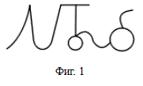
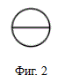
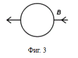
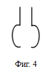
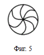
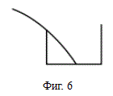
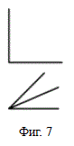
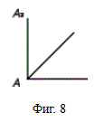

Беседа 2993 от 3877 · Беинса Дуно
Трите перпендикуляра
Отче наш.
Имате ли зададена тема? – /Имаме свободна тема./
Как сте я развили, обективно или субективно, вътрешно или вънкашно сте я развили? Четете някои, ще ви критикувам. /Един брат прочете една тема за възприемчивостта./
Колко пътища има възприятието? – Един ли е пътят, по който възприятието иде или са много пътищата му? Вие не трябва да вземате онази поза, която взема един клиент в една гостилница. Влезете и чакате да ви донесат приборите, кърпа, да ви донесат яденето и вие да оставите паницата и да излезете навън. Това е изкуствено положение. В природата такива работи не съществуват. Съществуват в човешкия живот. Или идете в някой магазин, искате да си купите дрехи, огледате нагоре, надолу. Казвате: „Дайте ми тия дрехи“, вземате ги и си отивате. Мислите ли, че редът на нещата е този? Казвате: „Дрехи трябва да имаме.“ Как си фабрикуват птиците дрехите? От кой магазин ги вземат? Сега ще превеждате.


Сега вие разглеждате вашия живот. Мислите ли, че се движите в празно пространство? При това вие се движите във въздуха, същевременно във вашия мозък съществува една мъчнотия. Двама души са движат, единият върви изправен, другият си навел главата и той върви. Защо единият си навел главата, а другият върви прав? Единият върви, пък другият се спрял и наблюдава. Защо? Следователно, този човек, който си навел главта, той минава в чувствения свят. Запример, вие имате в индуската философия „пракрити“, най-гъстата материя, която е земята, и тя се движи в по-рядка среда, наречена „прана“, слънчева енергия. Допуснете, че вие влизате, че вие имате достъп в един модерен магазин, имате доста тежест в джоба си, искате по някакъв начин да се освободите от някаква неприятност в джоба. За да се освободите, вие искате да направите обмяна. Той окачил някакви материали, един материал, който наричате връхна дреха. Или някакъв друг материал – шапки или някакви обуща.
На български казват, че обущата се обуват и гащите се обуват. Защо българинът турил една и съща дума: И обущата се обуват, и гащите се обуват. За палтото казва, че се облича. Българинът, понеже е материалист, предметно говори: Понеже обущата отдолу нагоре се турят и гащите отдолу нагоре се турят, посоката на обуването е една и съща. Турил едно и също име: Обува обущата, обува гащите. Понеже по същата посока става движението. Обличането не става по същата посока. Ти не обуваш палтото. Каква е посоката на движението? Вземеш го на широчина, туриш единия ръкав, после другия. Следователно, обличането има кръгообразно движение. „Обличам“, значи в широчина, „обувам“, отдоле нагоре. Можеш ли да кажеш, че обуваш нещо, когато движението е отгоре надолу? Ако е отгоре надолу, тогава казваш: „Турям си шапката.“ Под думата „турям“ какво разбирате вие? Или българите казват още: „Налагам си шапката.“ Значи, той сам си заповядва. Нещо, което той сам си налага отгоре. Пък нещо, което си обува, е отдолу нагоре. Налага се това, което е отгоре. Питам: Ако имате обуща, ще ги налагате или ще ги обувате? – Ще ги обувате обущата, а пък шапката ще я налагате. Тогава, ако една шапка вие налагате на главата си, тогава ще се познае колко сте учен. Ако тази шапка тежи десет килограма, че я наложиш на главата, ще ти бъде добре. Ако един човек налага на главата си една шапка от десет килограма, мислите ли, че е умен човек? Какъв бихте го считали?
В турско време във Варна, симикиджиите като станат сутрин, натурят гевреци, 50, 60, 100 парчета и половината напълнят със симиди, натурят на една голяма торба, после турят едно кръжило на главата и отгоре на това кръжило турят таблата със симидите и гевреците. Върви той по пътя с таблата, като една дама с шапка с голяма периферия. Тръгнал, върви и вика: „Гевреци, симиди!“ Този човек, той шапка носи. Но от тази шапка изважда и продава.
Но във физическия свят, ако вие товарите главата си, ако носите тежести горе на главата си, голямата тежест може да осакати главата. Най-възвишените, благородни чувства, които имате отгоре на главата, ще пострадат, ще се сплесне главата ви. Ще оставите главата свободна. Мисля, слабото развито религиозно чувство на българина се държи на кожените калпаци, които носи, че като ги налага, кожата спира тези висши центрове. Не може мозъкът да възприеме достатъчно храна. Не приема енергията отгоре и туй чувство да се облагородява. Ако вие поставите едно цвете на северната страна на къщата и едно на южната, ще видите каква разлика ще има между тях. Което е на северната страна, няма да е така добре развито както това, което е на южната.
Понякой път вие си туряте големи шапки, туряте големи тежести на главата си. Вие туряте големи, гъсти мисли. Кажеш: „Тази работа няма да я бъде.“ Ти имаш голяма спънка на главата си. И не можеш да възприемеш благородното. Ти туриш един чадър над главата си. Хубаво е чадър да носиш, но чадърът не допринася никаква полза. Аз казвам: Никога не туряйте една мисъл, която ще те спъне. Ти допущаш известна мисъл, но най-първо разсъждавай, тази мисъл разумна ли е, има ли си място или не.
Сега някои от вас пишете с мастило, някои с молив. Какви са съображенията, кое е износно? По-практично е с молив, но лесно се изтрива, лесно става, лесно се изтрива. С мастило по-мъчно става, по-мъчно се изтрива. Понякой (път) пишете с черно мастило, някой път със синьо. Кое мастило обичате повече, черното или синьото? Гледам книгите си, печатани се с черно мастило. Тук-там турят синьо.
Казвам: Трябва да изучавате някои науки, които ще ви ползуват. Трябва да дойдете до онази наука, която ще ви даде едно правилно разбиране на живота. В какво положение се движат краката ви? Как се нарича туй положение, когато върви човек? Краката се движат в едно положение, ръцете се движат в друго. Имате една плоскост, която образува тялото, която се обръща на една и друга страна, като вървите, а пък краката се движат по права линия. Ръцете ви вървят кръгообразно, правят известен ъгъл. А пък тялото при движението се обръща праволинейно и криволинейно движение на плоскостта. Понякой път и главата, и тя прави някакво движение при вървенето, движи се като някоя гемия. Запример, гледаш, някой върви и не си мърда главата. Защо? – Морето му е тихо. От морето зависи в каква посока ще се движат вълните, отпред ли ще идат на парахода или отстрани. Един човек, който като върви доста се клати, неговият мислов и чувствен свят имат доста вълни. Туй движение е на място. Той се приспособява да пази своето равновесие. Ако вълните идат на едната страна, той ходи наведен на другата – да пази равновесие, да не падне. Че ако краката се движеха тъй, както се движат у птиците, съвсем друг е процесът. Птиците простират краката си назад. Птиците употребяват за ходене във въздуха своите крила.



Щом си създадете един навик, вие на този навик трябва да му слугувате. Да допуснем, имате навик да ядете. Да ядете е естествено, но обичате много да ядете. Защо? Каква е мярката за яденето? Същият закон имате и със собата. Дето горенето не е пълно, може да изгорите сто килограма въглища, може да имате друга соба, в която може да изгорите десет килограма въглища и даже пет килограма, и за целия ден да имате толкоз топлина, колкото другите соби дават за сто килограма въглища. Значи, горенето не е пълно. Следователно, всички ония наши мисли и постъпки, които не са обмислени, поглъщат много енергия. Защото думата „обмислени“, да мислиш, значи да гориш добре, пълно горение. Да гориш добре и пълно горене, те са синоними. Ние се стремим към пълното горене. Там, дето има много кадеж, показва, че мисълта е слаба. Хората имат желание да се отоплят. Колко се турят въглища да се отоплят? Умните хора, за да си отоплят стаята, икономисват въглищата. Защото природата е много икономична. В природата няма никакъв излишък, няма никакъв недоимък. В природата няма неща складирани някъде. В нея всичко има, но няма никакъв излишък. За всяко нещо, колкото трябва на деня, толкова се дава. Та често във вас вие имате доста излишъци. Вие гледате някой човек, че е даровит, във вас се зароди желание и вие да бъдете даровит, ако той е музикант, и вие искате да бъдете музикант, без да вземете в съображение, че този човек е работил 30 години. За последния цигулар, Францискати, един цигулар, който го слушал, казва: „Аз не мога да си обясня как взима тия тонове.“ Известни ноти не може да си представи как той ги взема. И двойни, и тройни акорди, и много вярно, прецизно. Не само туй, то е техническата страна на въпроса. Сега той знае, за него е много лесно. Много лесно ги взима. Вземете един човек, който не знае да вдига тежести, как дига? Ще се наведе и много мъчно ще вдигне тежестта. Но има майстори, леко вдигат. Как се вдига известен товар?
Да ви приведа един пример. Някой път тия ножчета много мъчно се отварят. /Учителят показва своето ножче./ Казва: „Какво се е заяло?“ Набират се прашинки, ръжда. Ще вземеш, ще очистиш, ще намажеш масълце, ще намажеш. Пък той не го очистил цяла година, набрал се прах, ръжда, започва да го отваря, не се отваря. Вземи, поизчисти го, намажи го и ще се отвори. Вие сега не вземете да намажете вашия организъм, ами цяла година вие не сте почиствали себе си, работите не стават тъй, както трябва. Или да кажем, не сте се упражнявали. Има една координация. Ако ти не упражняваш ръката си, не може да пише. Като дойдеш да пишеш, смущаваш се. Пишеш някой чужд език, не знаеш как да го пишеш. Започваш да се колебаеш.
Та сега вие разсъждавате: „Защо природата така направила?“ Вие задавате въпроса: „Защо природата така направила, да ходи човек?“ Според вас как трябваше да го направи? Казвате: „Защо трябваше да ходи?“ Намират те някакъв дефект в ходенето му. Как е по-хубаво да ходиш: Като ходиш да си удряш петите или да ходиш на пръсти е по-хубаво? Защо да не е хубаво да си удряш петите? Тези хора, които си удрят петите, са много упорити, твърди. Като погледнеш обущата, отзад изядени. Щом са изядени обущата, пази се от него. Той мяза на английско магаре. Защото, ако е английско магаре, е един чешит, ако е турско магаре, е друг чешит. На английски се казва „ас“, на турски „ешек“. На английски магаре е „йас“, много ги товарят. Всякога английските магарета много ги товарят. Турските са тертеплии, щом му тури един чул, ще се качи отгоре. Магарето той смята ешек. „Ешек“ и „шик“ е все същото.
Трябва да се повърнем към първообразния живот, от който човек се е отдалечил. И се изисква дълго време, докато човек се научи да мисли правилно. Всичката задача на сегашния живот е да се научи човек на три неща: Да мисли правилно, да чувствува правилно и да постъпва правилно. Да мисли правилно, трябва да изучава законите на светлината. Той, ако не разбира светлината, ако не разбира свойството на цветовете, той не може да мисли правилно. Ако не може да координира в себе си топлината в даден случай, защото може да се изопачат чувствата. Ако краката ти изстинат, съвсем други чувства ще имаш. Ако ръцете ти са студени, чувствата ти ще бъдат в едно състояние. Ако главата е топла, а ръцете и краката студени, ще имате съвсем друго разположение. Ако главата е студена, а пък ръцете и краката топли, човек ще има друго разположение. Зависи в какво отношение се намират органите, които са свързани с човешкия ум. Понеже умът борави с всички тия органи, те трябва да бъдат в изправно състояние. Ако стомахът ни е в неизправно положение, ще се изменят вашите чувства. Щом стомахът не е изправен, хората са кисели, сприхави. Когато стомахът е развален, всичките хора започват да стават мнителни. Онези хора, на които дихателната система не е изправна, на които дихателната система е нарушена, са много мнителни. Някои, на които храносмилателната система не е в изправност, стават кисели, недоволни от всичко. Тогава, щом сте кисели, изчистете стомаха си. Щом си мнителен, подозрителен, оправи дробовете си. А пък ако не знаеш да мислиш, не знаеш да ходиш правилно, да се движиш, в движението трябва да има отмереност. В ходенето мисълта трябва да взема участие. В ходенето изхарчваш безразборно енергия. В твоите движения умът ти трябва да присъствува. Като ходиш, да ти е приятно, че ходиш. В ходенето умът ти да взема участие. Във всяко движение умът ти да присъствува. Аз ви давам едно здравословно правило. Който иска да бъде здрав, като ходи, да мисли за ходенето. Да му е приятно, че ходи. Щом никак не мислиш за твоето ходене, лесно можеш да се разболееш. Тези неща може да ги наблюдавате. Вие търсите здравето. Тръгне някой да върви, той гората разглежда, цветята разглежда, къщите разглежда, а пък не мисли за своите движения – върви, удари си някъде крака. Ако вие не внимавате, с всеки удар, с всяко стълкновение става сътресение на нервната система. Казвам: Научете се да ходите. Че като ходите, прах да не дигате. Някой път се научете, че като се приближавате до някого, да ви не усети, така леко да стъпвате, че вашият приятел да не чуе. Като дойдете до него, да подскочи.
Вярвайте: В света съществува един разумен свят, художествен свят, дето всички неща са турени на място. Движенията на очите, погледът, движенията на ръцете, всичко това да бъде отмерено. Туй трябва да бъде идеал. Човек може да ходи както иска, може да си маха ръцете както иска. След като се движи един човек, онези, които разбират, знаят, този човек ще успее или няма да успее. Тръгнал някой, маха си ръцете, върти се като ходи – нищо няма да направи. Друг върви бързо, бързо, и той нищо няма да направи. Не са естествени движенията. Този, който бързо се движи, той не е търпелив. Той ще иде, изисква се време да почака, той едва чакал пет минути, казва: „Не искам да чакам повече.“ Казва: „Обеща.“ – Обещал, но закъснял. Понеже мисли, че бързо се движи, казва: „Не мога да го чакам повече.“ Той не може да чака и работата му остава недовършена. Вие разрешавате една задача, не може да я разрешите и току хвърлите книгата. Не чакате да я решите. Някой музикант вземе да свири някое парче, мъчно, пак го остави. Художникът взема нещо, рисува, рисува, погледнеш, оставя четките, отлага го. Та казвам: Във всичките неща се изисква търпение. Има една търпеливост нормална. Една мярка има в природата. Тя е следната: Вие разглеждате един предмет.



Вие искате някой път да развивате търпението. Ще намерите някой човек, който е търпелив. Той ще пише, ще намерите учебниците по търпението. Искате да бъдете смел. Ще намерите учебниците на смелостта. Да знаете какво нещо е смелият човек. По какво се отличава смелият и търпеливият човек? Смел човек в Стария завет е Давид. Като бил овчар, дошъл един лъв и му взел една овца. Давид настига лъва, хваща го за устата, изважда му овцата, хваща го за двете челюсти и му разчеква устата. Този човек е смел. Той не мисли, че това е лъв. Лъвът се уплашил. Смелите хора имат силни трептения. Някой път може да е по-слаб телесно, но понеже неговият ум действува, неговият неприятел се уплашва. В живота трябва да бъдете смели. Вие седите и решавате една задача. Уплашите се и казвате: „Няма да я реша.“ Като хванете задачата, вашата задача е един лъв, хванете го за устата, хванете го за двете челюсти и го разчекнете. Разрешаването на задачата наричам овцата, която изваждате из устата на този лъв. Всяка разрешена задача е извадена от устата на лъва. Ако не я освободите, вашата овца ще бъде изядена. И вие ще бъдете без овца.
Растенията твърди ли са или са постоянни? Растенията хиляди години са изучавали постоянството. Постоянство има в тях. Едно растение, ако го наблюдаваш, то се клати. След като се клати със сто години, едва извървява два метра. За растението двата метра разстояние, туй разстояние му се струва да е хиляди километра извървяло. Ние от наше гледище казваме два метра, но за неговото съзнание двата метра колко усилия му костуват. Преставете си, че това растение е живяло десет хиляди години, или хиляда века живяло. Какво разстояние ще изходи? – Ще изходи две хиляди метра. В десет хиляди години това растение ще изходи два километра. Следователно, аз казвам тъй: След като изходило два километра, то е живяло сто хиляди години. Туй усилие се дължи на сто хиляди години.
Та казвам: Природата, и тя обръща внимание на онова, което трябва да изработите, толкоз, колко си изходил, каква енергия си употребил, какво си научил. Не мислете, че растенията са прости. Много учени са растенията. Растенията знаят тайната за дългия живот. Растения има, които живеят 5, 6, 8, 10 хиляди години. Казвате: „Дарба.“ Това не е само дарба, но знаят как да живеят дълъг живот. После растенията много лесно си поправят раните. Каквато рана дойде, поправят. Има един начин за поправка.
Та казвам: Когато вие искате да научите какво нещо е търпението, трябва да мислите за растенията. Те се отличават с много голямо постоянство и много голямо търпение. Да търпиш ти хиляда века, за да изходиш две хиляди метра разстояние. Но в изминаването на тия два километра в хиляда века, едно растение много работа е свършило.
Сега пазете се да турите себе си в изправление. Нали когато бяха руските пътници на северния полюс, постоянно имаха радио. Човек постоянно трябва да бъде във връзка с онзи, разумния свят, да приема и да се ориентира. Защото условията, при които живеем, са много неблагоприятни. На онези изследователи бяха ли благоприятни условията на северния полюс, постоянно имаха радио. Човек постоянно трябва да бъде във връзка с онзи разумен свят, да приема и да се ориентира. Защото условията, при които живеем, са много неблагоприятни. На онези изследователи бяха ли благоприятни условията на северния полюс? Та казвам: По същия начин и вие трябва да изучавате природата. Вие понякой път мислите, че никой не се грижи за вас. Нямате никакви съобщения. Поне едно радио трябва да имате. Ако вие скъсате всичките съобщения, вас ви очакват големи страдания. Колкото страданията на човека са по-големи, това показва, че връзката е слаба. Колкото страданията се намаляват, връзката се усилва. Трябва да се усили връзката, за да се премахнат страданията. Не че вие нямате връзка, но ако връзката ви е силна, вие по-лесно ще се справите с мъчнотиите в живота. За да се справите, трябва да дишате дълбоко. Хранете се добре, мислете добре. Дръжте главата си изправена, не я навеждайте на една или на друга страна. Главата по възможност дръжте винаги перпендикулярна. Някой път може да я навеждате назад, напред, но винаги трябва да има отвесно положение, перпендикулярно. Човек, който мисли правилно, има перпендикулярно отношение. Който мисли криво, перендикулярът не е изправен. Който чувствува правилно, има перпендикуляр в чувствата. Който постъпва правилно, има перпендикуляр във волята. Следователно, има три перпендикуляра: Перпендикуляр на правата мисъл, перпендикуляр на правите чувства и перпендикуляр на правите постъпки. Щом изгубиш перпендикуляра си, тогава ще изгубиш равновесието. Като дойдете някой път, има едно противоречие. Защото на земята се намират много търпеливи хора, много умни. Щом дойдете до едно противоречие, нямате достатъчно търпение. Свържете се с един търпелив човек. Може да е англичанин, може да е американец, може да е китаец, който и да е, тия хора, които имат търпение си приличат навсякъде. Търпението не признава народност. Търпението може да го има овчарят и царят, може да го имат еднакво. В царя може да го няма и в овчаря може да го няма. То не се обуславя от положението на човека. Ти може да имаш най-хубавите дрехи, без да имаш търпение. Може да си хубаво облечен, без да си разумен. Може да си облечен много скромно, може да си облечен със скъсани дрехи и да имаш туй, което богатият няма.
За предпочитане е човек да има един златен перпендикуляр. Аз го наричам златен перпендикуляр. Всички трябва да имате по един златен перпендикуляр. Един златен перпендикуляр на ума, един златен перпендикуляр на сърцето, един златен перпендикуляр на постъпките. Той е идеалният живот на земята. От злато да бъде, не от желязо, не от бакър, не от сребро, от злато да бъде. Колко карата има чистото злато? – 24.
Само светлият път на Мъдростта води към Истината.
В Истината е скрит животът!
XVIII година.
22 лекция на Младежкия окултен клас,
държана от Учителя на 31 март 1939 г., петък, 5 ч. с.
София – Изгрев.